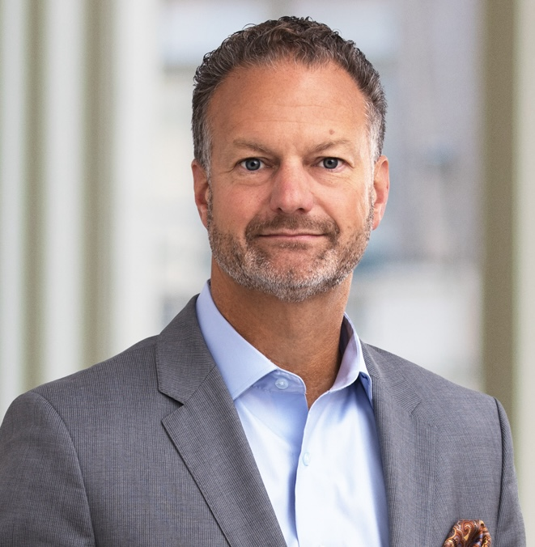
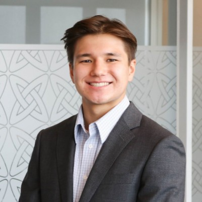

Meet Our Committee
Our evaluation committee hosts diverse qualifications.

Dr. Michael Moreno
Assistant Professor, Mechanical Engineering – Texas A&M University
Dr. Moreno is the Director of the Biomechanical Environments Laboratories. His research is focused on experimental biomechanics and biomechanical engineering across multiple scales.

Alexandra Farhangui
Medical Resident - EnMed
Alexandra currently has two devices undergoing IP review, with a third to be submitted in the fall of 2024. Additionally, her publications include research on AI image-based dermatologic diagnostic algorithms, edutainment for kidney transplants, and suture tensile strength in sacrocolpopexy.

Bijan Farhangui
Medical Entrepreneur
Bijan is a serial entrepreneur who has had several successful ventures (Melanoma Diagnostics, PET/CT Imaging, SAMI Services) within the medical industry. He holds an MBA focused in Finance, Marketing, and International Business from Northwestern University - Kellogg School of Management.

For nearly three decades, Paul has safeguarded intellectual property assets for small and large businesses alike. He has served as lead counsel for clients such as ABB, BISSELL, Corning Incorporated, Cummins Inc., Ingersoll Rand, Roche Diagnostics and Whirlpool Corporation in patent litigation matters.

Ray Kman
Technical Advisor
With a background in Electrical Engineering and hardware product development, Ray brings significant technical expertise with bringing products to market. He currently resides in San Francisco and has recently been working on low-power IoT applications.